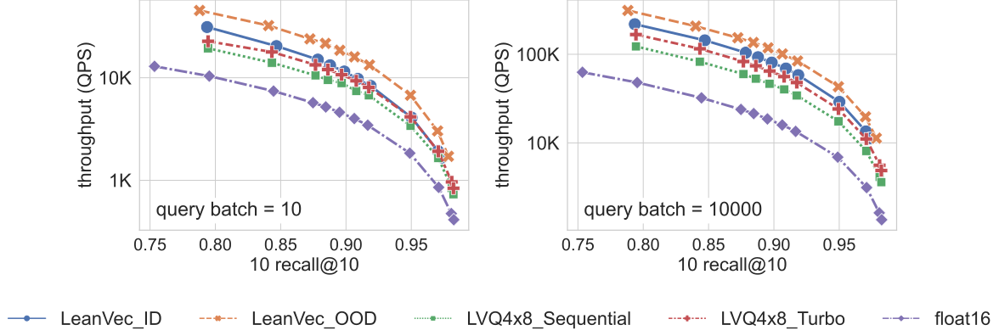
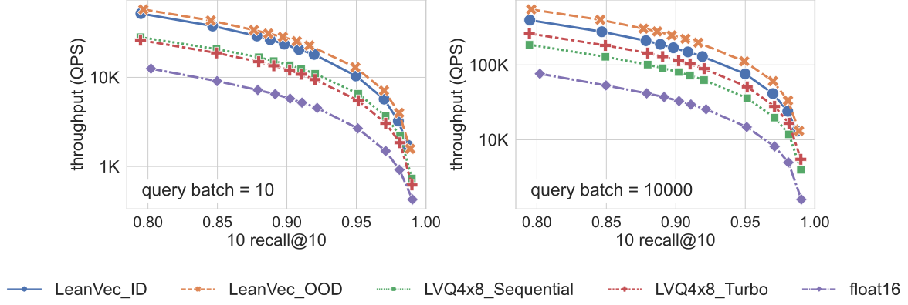
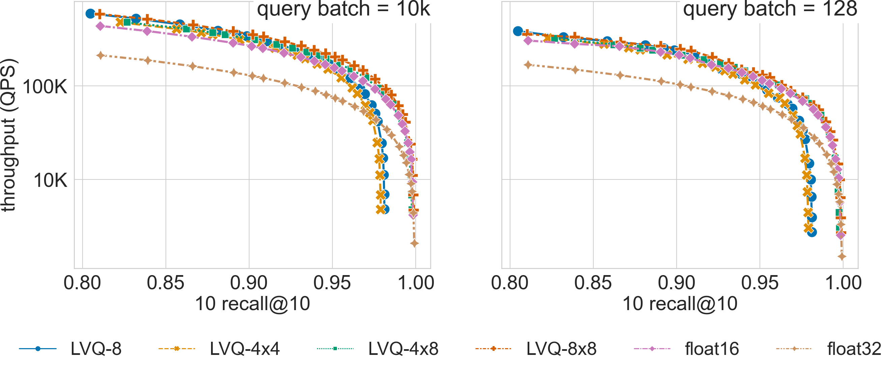
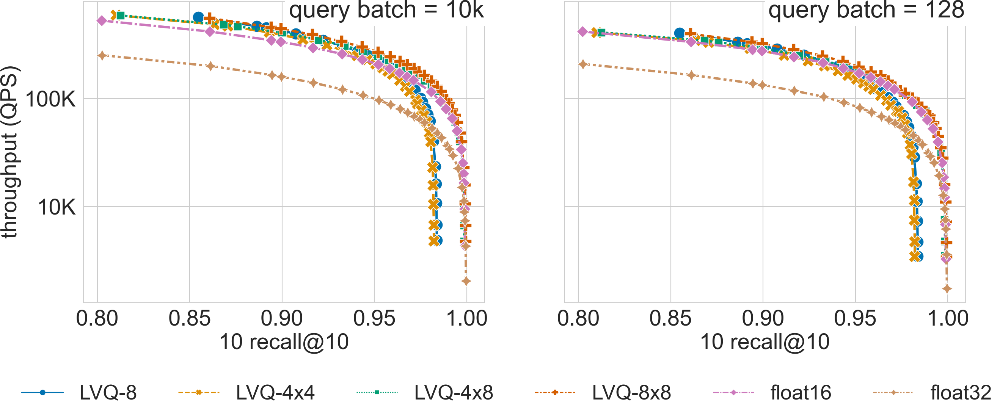
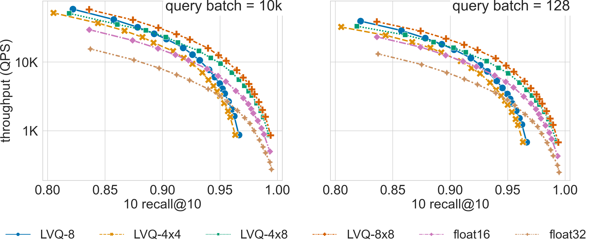
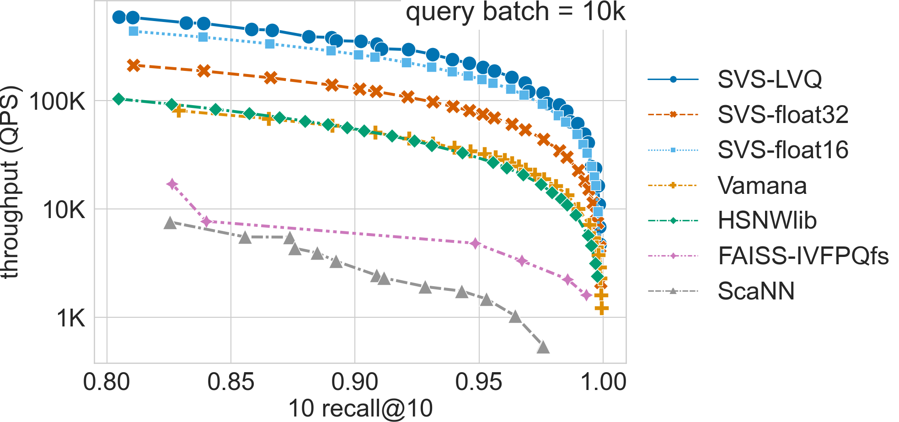
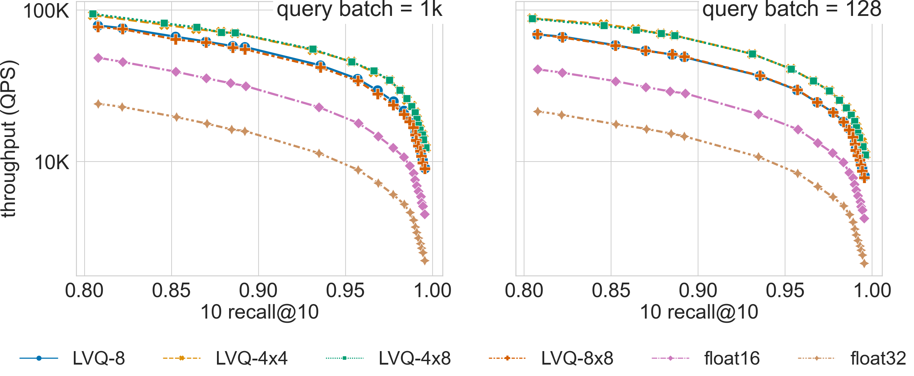

Ablation Studies
Dimensionality reduction and Turbo LVQ
In this section we present an ablation study highlighting the speed-up introduced by our latest features:
TurboLVQ, a novel optimized low level implementation strategy for LVQ [AHBW24]
LeanVec, a novel dimensionality reduction technique with support for out-of-distribution (OOD) queries [TBAH24] (currently with experimental support in SVS)
The system setup is described here.
The figures below show the QPS vs recall curves for the rqa-768-10M-OOD and rqa-768-1M-OOD datasets (10M 768-dimensional embeddings generated with the dense passage retriever model RocketQA [QDLL21] with out-of-distribution queries), showing the speed-ups achieved by each of the introduced new features for different query batch sizes (10 and 10k).
Results for the rqa-768-10M-OOD dataset
{kind=link}
Results for the rqa-768-1M-OOD dataset
{kind=link}
Vector Compression
Large Scale
We show here how the LVQ vector compression can boost SVS performance relative to using float32 or float16 encoded vectors. The best LVQ flavor (whether one or two levels, and the number of bits used to encode each level) depends on the dataset and the memory footprint restrictions. The results below can serve as reference for datasets of similar dimensionality / cardinality. The system setup is described here.
The memory-footprint ratio (MR) measures the space occupied by the graph (with graph_max_degree = 128) and the
float32-valued vectors relative to the space occupied by the graph and the LVQ-compressed vectors. As shown in the table below,
for larger dimensionalities, LVQ highly reduces the memory requirements achieving a large MR,
and the additional bandwidth reduction from LVQ-4x4 and LVQ-4x8 provides a significant performance boost over LVQ-8.
deep-96-1B |
t2i-200-100M |
|||
w.r.t. float32 |
QPS |
MR |
QPS |
MR |
float16 |
2.1x |
1.3x |
1.9x |
1.4x |
LVQ-8 |
2.6x |
1.4x |
2.9x |
1.8x |
LVQ-4x4 |
2.3x |
1.4x |
2.2x |
1.8x |
LVQ-4x8 |
2.5x |
1.3x |
3.1x |
1.6x |
Ablation Results
Click on the triangles to see the throughput vs recall curves comparing SVS with several LVQ settings, as well as float32 and float16 encodings, for each dataset.
Results for the deep-96-1B dataset
{kind=link}
Results for the deep-96-100M dataset
{kind=link}
Results for the t2i-200-100M dataset
{kind=link}
Ablation + comparison to other methods
Click on the triangles to see the throughput vs recall curves comparing the highest performing SVS-LVQ setting (a Pareto curve built with results from LVQ-8, LVQ-4x4, LVQ4x8 and LVQ8x8), SVS using float32 and float16 encodings, as well as other methods for each dataset.
Results for the deep-96-1B dataset
{kind=link}
Small Scale
Memory footprint reduction is often not relevant for small scale datasets as their overall memory requirements are easily satisfied by most low-end servers. However, we show here that for high-dimensional datasets, the performance boost achieved by LVQ makes it very relevant even for datasets with a few million points. The system setup is described here.
{kind=link}
The figure compares search performance for different LVQ settings, as well as using float32 and float16 encoded
vectors, for the 960-dimensional gist-960-1M dataset (graph built with graph_max_degree = 128).
LVQ-compressed vectors are padded to half cache lines (padding = 32).
For a search accuracy of 0.9 10 recall at 10, SVS with LVQ-4x4 compressed vectors has a 4.3x and a 4.5x higher QPS than its float32 counterpart for batch sizes 1k and 128 respectively. Similar performance gains are achieved by LVQ-4x8, with a slighter higher memory footprint.